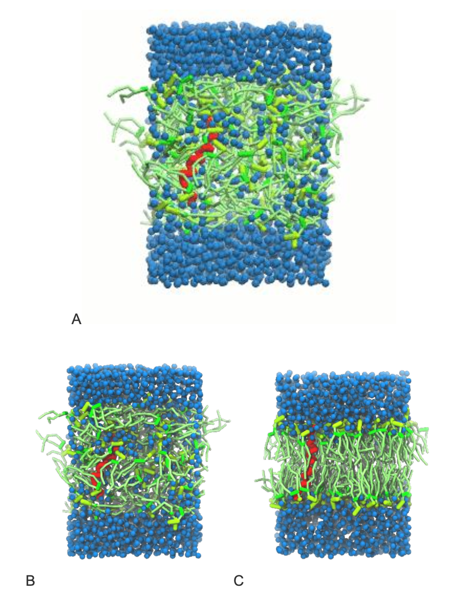

Proteins IIa: Setting Up Transmembrane Peptide Simulations with Martini
In case of issues, please contact Luís Borges-Araújo.
Summary
1. Introduction
In this module of the Proteins tutorial, we will increase the complexity of our system by embedding a peptide in a lipid bilayer. For background on setting up membranes, please refer to the Lipids part I and Lipids part II tutorials.
The main goal here is to explore different strategies for building basic membrane-peptide systems using Martini. To do so, we will explore the tilt and dimerization of KALP peptides [1,2] embedded in a POPC membrane.
KALP peptides are synthetic model helices composed of alternating leucine and alanine residues, flanked by lysines. They are widely used to study generic properties of transmembrane helices, such as insertion, tilt, and dimerization, in simplified membrane environments. Eukaryotic plasma membranes (PM) are often approximated by a pure POPC bilayer, as POPC is one of the most abundant phospholipids in the PM. Alternatively, pure DOPC bilayers are sometimes used, as their average physical properties can resemble those of a PM, even though DOPC itself is not especially prevalent in eukaryotic cells [3].
The files required for this tutorial (including worked files) can be downloaded from here.
2. Setting up your protein model
The coarse-grained structure and topology of KALP can be easily generated from an all-atom structure using martinize2, as explored in the previous protein tutorials. Move to the peptide_martinize directory and run the following martinize2 command:
martinize2 -ff martini3001 -f ../kalp-AA.pdb -x kalp.pdb -p backbone -o system.top -ss CCHHHHHHHHHHHHHHHHHHHCCIn simulations involving peptides, it is important to carefully define the secondary structure. Since peptides can be highly flexible, your structural assumptions must be well justified. For transmembrane (TM) peptides like KALP, which typically contain 20 to 30 residues (23 residues in the example used in this tutorial), the terminal regions are expected to be relatively disordered, while the hydrophobic TM core should adopt a stable helical conformation. For other TM peptides, it may be useful to include longer terminal regions or apply terminal capping, depending on the system under study. As such, we will assign the secondary structure string using the -ss flag in martinize2, for example: -ss CCHHHHHHHHHHHHHHHHHHHC.
Elastic network [4], Gō [5] or OLIVES models [6] are not necessary in this case, as the bonded parameters in the Martini model are usually sufficient to maintain the structural integrity of simple helices.
2.1. Water biasing to correct model artifacts.
While we demonstrate the use of water biasing here for educational purposes, it should be treated as a last resort. Incorrectly applied biasing can distort and artifically drive the physical behavior of the system. This can compromise the interpretability and generalizability of your results. Always first try standard protocols before introducing bias. If you do use biasing, be explicit about it in your analysis and consider running controls without it.
Small peptides, particularly those with uncharged terminal regions, may fail to insert properly into lipid bilayers in Martini 3 and instead become adsorbed at the membrane surface or even get ejected during the simulation[7].
To enhance the insertion of peptides into lipid bilayers, a water bias can be applied to reduce the strength of protein-water interactions in selected regions of the peptide. This is particularly useful for transmembrane peptides or small transmembrane proteins that may otherwise remain adsorbed at the membrane interface. The bias is implemented via virtual backbone sites[5] which allow tuning of Lennard-Jones interactions with water beads without altering bonded interactions.
In martinize2, this is done using the -water-bias flag along with -water-bias-eps, specifying a bias for each secondary structure category. In the water_bias directory, generate a new version of the peptide parameters, complete with water biasing, using the following command:
martinize2 -ff martini3001 -f ../kalp-AA.pdb -x kalp.pdb -p backbone -o system.top -ss CCHHHHHHHHHHHHHHHHHHHCC \
-water-bias -water-bias-eps E:-.5 C:1.0 H:-1.0This applies a -0.5, 1.0 and -1.0 kJ/mol water bias to extended, coil, and helical residues respectively. These are the recommended default settings. In our case, decreasing the backbone interactions with water in the helical regions helps promote membrane insertion by reducing the tendency of the peptide to remain at the membrane surface.
Adding this bias generates additional files, virtual_sites_atomtypes.itp and virtual_sites_nonbond_params.itp which include the definition of the virtual sites. Have a look at these files and familiarize yourself with their format. Do not rename these files, as their names are referenced explicitly in the conditional #include statements used in the topology. Renaming them may cause errors or missing parameters during preprocessing.
To use them, you must modify the martini_v3.0.0.itp file provided to include their content conditionally. This can be done by inserting the following lines between the [ atomtypes ] and [ nonbond_params ] sections (line 858).
#ifdef WBIAS
#include "virtual_sites_atomtypes.itp"
#include "virtual_sites_nonbond_params.itp"
#endifYou can do this manually using a text editor, or programmatically using the following sed command, which inserts the lines after line 858 (adjust the number if needed):
sed -i '858i\
#ifdef WBIAS\n#include "virtual_sites_atomtypes.itp"\n#include "virtual_sites_nonbond_params.itp"\n#endif' martini_v3.0.0.itpImportant: Run this command only once, or you will introduce duplicate blocks into your file.
Finally, activate the bias by adding the following line to the top of your system.top file:
#define WBIAS3. Insert your protein in a membrane environment
After generating the coarse-grained structure and topology of KALP, we can proceed by embedding the protein into a membrane environment. Specifically, into a lipid bilayer. There are different ways to achieve this, and in this tutorial, we present two common approaches, which are described in the following sections:
3.1. Self-assembly approach
A bilayer self-assembly simulation, as introduced in the first module of the as introduced in the first module of the lipid tutorial part I, will lead to the spontaneous insertion of the KALP peptide into the the bilayer (Fig. 1). The first step is to create a simulation box containing your coarse-grained KALP model, POPC lipids, water, and ions, all randomly distributed. This sets up the initial conditions for bilayer self-assembly. You can generate this system using the following commands in the self_assembly directory:
gmx editconf -f ../water_bias/kalp.pdb -o kalp.gro -d 1.5
# Inserts 156 POPC molecules around KALP in a 7 × 7 × 6 nm box.
gmx insert-molecules -f kalp.gro -ci POPC.gro -nmol 156 -box 7 7 6 -try 500 -o system_no-solvent.gro
# Extends the box in the z-direction to allow for some extra space for solvation
gmx editconf -f system_no-solvent.gro -o system_no-solvent.gro -c -box 7 7 10
# Adds water beads to the system, avoiding overlaps within a 0.21 nm radius.
gmx solvate -cp system_no-solvent.gro -cs water.gro -o system_solvated.gro -radius 0.21
The .top file must be updated to include the necessary Martini 3 .itp files. Begin by copying system.top from ../water_bias/, and editing it to look something like this:
; if you use water biasing add the following define.
#define WBIAS
; here you include all the .itps
#include "../water_bias/martini_v3.0.0.itp"
#include "../water_bias/molecule_0.itp"
#include "martini_v3.0.0_phospholipids_v1.itp"
#include "martini_v3.0.0_solvents_v1.itp"
#include "martini_v3.0.0_ions_v1.itp"
[ system ]
; name
Your very first self assembly system :).
[ molecules ]
; name number
molecule_0 1
POPC <NLIPIDS>
W <NWATERS>You can easily find the number of waters and lipids in your system using grep to correctly finalize your .top file. The following command will print two numbers corresponding to the number of lipids and waters in the system respectively. Fill them in in your copy of system.top above:
NLIPIDS=$(($(grep -c POPC system_solvated.gro)/12)); echo $NLIPIDS
NWATERS=$(grep -c W system_solvated.gro); echo $NWATERSOnce the system is solvated and the topology is constructed, the system requires counter ions for the charge of the peptide. This can be easily achieved using the gmx genion tool:
gmx grompp -f minimization.mdp -p system.top -c system_solvated.gro -r system_solvated.gro -o ions.tpr
echo W | gmx genion -s ions.tpr -p system.top -neutral -o ions.groOn inspecting system.top again, you should see that 4 W beads have been replaced with 4 CL ions to counter the +4 charge on the single KALP peptide. The system is now ready for minimization:
Note 1: During the minimization and equilibration steps, if position restraints are applied, the coordinates provided via -c (in this case, minimization.gro) will be used as the reference positions for the restraints with flag -r. Make sure the structure used as input is consistent with what you intend to restrain.
# Minimization
gmx grompp -f minimization.mdp -c ions.gro -r ions.gro —p system.top -o minimization.tpr
gmx mdrun -deffnm minimization -vOnce energy minimized, we can proceed with a short equilibration simulation:
Note 2: During the self-assembly stage, we use isotropic pressure coupling to allow the system to equilibrate freely in all directions. Once the bilayer has formed and stabilized, you should switch to semi-isotropic pressure coupling to maintain realistic membrane structure and fluctuations. Additionally, consider applying separate thermostat coupling groups for the solvent and the membrane (and protein, if present). This helps maintain better thermal equilibration across different components of the system, especially when their dynamics differ significantly.
Note 3: Depending on the machine used, the -nt and -pin flags of gmx mdrun may be useful additions to the commands below
# Equilibraton
gmx grompp -f equilibration.mdp -c minimization.gro -p system.top -o equilibration.tpr -r minimization.gro
gmx mdrun -deffnm equilibration -vAnd finish with a production run:
# Production
gmx grompp -f dynamic.mdp -c equilibration.gro -p system.top -o dynamic.tpr
gmx mdrun -deffnm dynamic -v3.2. Pre-built approach
This second method is the easiest and most straightforward, and it is the recommended approach for building protein-in-membrane systems. It makes use of membrane builder programs, such as insane or COBY, which are designed to construct complex Martini systems efficiently.
These tools can automatically generate a pre-assembled bilayer with one or more proteins already inserted into the membrane, typically positioned at the center or at user-defined locations. They allow you to customize the number of proteins, their orientation, and lateral placement within the bilayer. In addition, you can define the lipid composition, box dimensions, water content, and ionic strength, all in a single step. This greatly simplifies system setup and reduces the chance of user errors.
Option 1: Insane
The basic procedure using insane is outlined below:
The syntax of the insane [8] package is very similar to what was used so far; it can be invoked by running insane -h.
Installing insane: Details for insane are listed on the Downloads page. It is recommended that you install insane in a new virtual python environment, from which you can simply install insane with:
pip install insaneLet’s see a practical example, using the kalp.gro that we generated during the self assembly method. First move to the folder containing some input files for insane, (i.e. cd ../insane), and copy kalp.gro (i.e. cp ../self_assembly/kalp.gro .) here. Then we can generate a membrane with our inserted peptide using insane with the following command:
insane -f kalp.gro -o system.gro -p system.top -pbc square -box 7,7,9 -l POPC -u POPC -center -sol W -salt 0.01The previous command line will set up a complete system, containing a squared POPC bilayer of \(7×7 nm^2\), with the KALP peptide inserted and centered in this bilayer. The whole system will be solvated in standard coarse-grained water. A small concentration of NaCl was added only to neutralize the +4 charge of KALP.
insane provides a prototype system.top file. However, you should always double-check that all #include statements match the components in your system and point to the correct .itp files. Certain versions of insane.py may also name ions as NA+ and CL- by default. You must rename them to NA and CL in both the .gro and .top files to match the standard Martini 3 ion definitions and avoid issues during preprocessing. For simplicity of referring to the same set of topology files as before, the header of the new system.top could look along the lines of this:
#include "martini_v3.0.0.itp"
#include "../peptide_martinize/molecule_0.itp"
#include "../self_assembly/martini_v3.0.0_phospholipids_v1.itp"
#include "../self_assembly/martini_v3.0.0_solvents_v1.itp"
#include "../self_assembly/martini_v3.0.0_ions_v1.itp"…More on the insane tool can be found in separate tutorials, notably setting up a complex bilayer (lipid tutorial part II).
With the system generated and topology corrected, we can run a short minimization simulation:
gmx grompp -f minimization.mdp -p system.top -c system.gro -o minimization.tpr -maxwarn 1
gmx mdrun -deffnm minimization -vWith the bilayer pre-made complete with the peptide inside, we can use semi-isotropic pressure coupling with multiple temperature groups already. This requires making an index file with groups for Protein_POPC and W_ION, as indicated in the tc_grps entry in both equilibration.mdp and dynamic.mdp. We can make it easily either through manual selection in gmx make_ndx, or by using the following command:
gmx make_ndx -f minimization.gro << EOD
1|13
14|15
q
EODWith the index file generated, we can now proceed with an equilibration simulation, using the index file in the -n flag of gmx grompp:
gmx grompp -f equilibration.mdp -p system.top -c minimization.gro -r minimization.gro -n index.ndx -o equilibration.tpr
gmx mdrun -deffnm equilibration -vAnd finally a production simulation:
gmx grompp -f dynamic.mdp -p system.top -c equilibration.gro -n index.ndx -o dynamic.tpr
gmx mdrun -deffnm dynamic -vOption 2: COBY
An alternative to insane.py is COBY [9], a membrane builder specifically designed to work with Martini 3. It offers greater control over protein placement, membrane composition and supports multicomponent and asymmetric bilayers. You can find out more about COBY and about what it can do on GitHub.
COBY is a python package which can be easily installed using pip:
pip install COBYIt can be run both within a Python script, Jupyter notebook or as a terminal command-line, and uses a single command to specify all the system requirements. Let’s look at a practical example:
import COBY
COBY.COBY(
### Def. box size (xyz, nm) and type.
box = [7, 7, 9],
box_type = "rectangular",
### 'membrane' creates a simple POPC membrane
membrane = "lipid:POPC",
### 'protein' inserts a protein at the center of the system. Copy ‘kalp.pdb’ from ../peptide_martinize/ to the current directory.
protein = "file:kalp.pdb moleculetypes:molecule_0",
### 'solvation' solvates the system using the default settings [water] 55.56 M & [NaCl] = .15 M
solvation = "default",
### Include .itps for charge calcs and to write .top file.
itp_input = [
"include:../insane/martini_v3.0.0.itp",
"include:../self_assembly/martini_v3.0.0_ions_v1.itp",
"include:../self_assembly/martini_v3.0.0_phospholipids_v1.itp",
"include:../self_assembly/martini_v3.0.0_solvents_v1.itp",
"include:../peptide_martinize/molecule_0.itp", ],
### Designates the system name
sn = "SimpleMembrane",
### File writing
out_sys = "system.gro", out_top = "system.top", out_log = "log.log")This short Python script creates a POPC bilayer of size 7 × 7 nm² with the KALP peptide centered in the membrane. The system is then solvated with coarse-grained water and neutralized with NaCl. COBY automatically generates a system.top file and includes relevant #include statements. However, as always, you should carefully check that all entries are consistent with your system and that required .itp files are present and correctly referenced.
You can now proceed as before and set up the production run. To recap, this involves the following steps:
- If necessary, edit the
system.topfile to match the Martini version you are using, and make sure it includes the correct topology files via#includeand#definestatements. - Download or copy the necessary Martini 3
.itpfiles, includingmartini_v3.0.0_phospholipids_v1.itp. - Ensure that the molecule names in your coordinate and topology files are consistent.
- Run the minimization and equilibration steps before launching the production simulation.
4. Analyzing helix tilt angle
Once your simulation has completed, a useful quantity to analyze is the tilt angle of the transmembrane helix with respect to the bilayer normal (typically the z-axis). This gives insight into how the peptide aligns within the membrane and how this orientation might change depending on lipid composition or bilayer thickness.
One way to compute the tilt angle is using gmx gangle. This tool calculates the angle between two vectors over time — in our case, between the peptide axis and the z-axis (bilayer normal).
First, you need to create an index.ndx file that defines the atoms (or beads) used to construct the peptide vector. A common choice is the backbone beads along the transmembrane region of the peptide, for example, the vector between residues 3 and 21 in KALP. In a new folder, analysis, we can look at the two trajectories in turn.
gmx make_ndx -f ../insane/dynamic.tpr -o insane_index.ndxInside the interactive prompt, enter:
a 7 43
qThis creates a group called a_7_43 corresponding to the backbone beads in the helical region.
Next, compute the tilt angle with:
gmx gangle -f ../insane/dynamic.xtc -s ../insane/dynamic.tpr -g1 vector -group1 a_7_43 -g2 z -n insane_index.ndx -oall angles.xvg -rmpbcThis will output the angle (in degrees) between the peptide vector and the z-axis over the course of the simulation (angles.xvg). You can visualize this data to assess whether the helix remains vertical, adopts a tilted orientation, or fluctuates dynamically.
To plot the data you can, for example, use xmgrace:
xmgrace angles.xvgTake a moment to reflect on the tilt angle values — what do they tell you about how the peptide interacts with the membrane? Can you relate the observed behavior to membrane thickness, peptide length, or hydrophobic mismatch?
Repeat the above steps for the COBY trajectory. What, if any, are the differences between the two simulations?
5. Going further
The following sections are optional extensions for those interested in exploring more advanced topics. These exercises go beyond the core tutorial and are meant to give you a taste of how membrane composition and peptide–peptide interactions can influence simulation outcomes.
5.1. Studying the impact of lipid composition.
Membrane properties, such as thickness, fluidity, and packing, can significantly influence the behavior of embedded transmembrane peptides. In this exercise, we explore how changing the lipid composition affects the orientation and insertion of a transmembrane helix.
Specifically, you will generate a new system in which the membrane is composed of a thinner lipid species — for example, DLPC instead of POPC. DLPC has shorter acyl chains (12:0), which results in a thinner bilayer compared to POPC (16:0–18:1). This difference in thickness can lead to hydrophobic mismatch, altering the tilt angle of the peptide as it attempts to optimize interactions between its hydrophobic core and the membrane interior.
Tasks:
Use the same procedure as before to build a KALP-in-membrane system, replacing POPC with DLPC.
Equilibrate and simulate the system under the same conditions as your previous run.
Visualize and measure the tilt angle of the transmembrane helix over time (e.g., using
gmx gangleor a custom script).Compare the results to those obtained with POPC. How does the membrane thickness influence peptide orientation?
This simple example illustrates how Martini simulations can be used to study lipid–protein coupling effects, which are relevant for understanding membrane protein function, adaptation, and stability in different lipid environments.
5.2. Studying peptide dimerization.
Membrane-embedded peptides can self-associate into dimers or higher-order oligomers, often adopting specific orientations such as parallel or anti-parallel arrangements. These interactions are sensitive to peptide sequence, concentration, membrane environment, etc.
In this exercise, you will explore peptide dimerization by increasing the system size to include two KALP peptides.
Tasks:
- Use gmx genconf to double the previous system in one dimension (e.g., the x-axis), creating a box with two peptides placed side-by-side (see code below). Alternatively, use
COBYorinsaneto generate a larger base system containing 2 or more peptides.
gmx genconf -f system_solvated.gro -o system_dimer.gro -nbox 2 1 1Update the topology file (
system.top) accordingly by doubling the number of KALP molecules and adjusting the[ molecules ]section.Rerun the minimization, equilibration, and production simulations.
Analyze the peptide–peptide interactions: do they form dimers? Are the helices aligned in a parallel or anti-parallel orientation? You can use tools like
gmx mindist,gmx angle, or trajectory visualization to characterize the geometry of dimerization.
Due to the stochastic nature of dimer formation, more than one simulation or longer trajectories may be needed to observe both dimerization and its preferred orientation. Running multiple, long replicas with different initial velocities is strongly recommended.
6. Tools and scripts used in this tutorial
GROMACS(http://www.gromacs.org/)martinize2(https://github.com/marrink-lab/vermouth-martinize)insane(details here)
7. References
[1] Monticelli, L.; Kandasamy, S. K.; Periole, X.; Larson, R. G.; Tieleman, D. P.; Marrink, S.-J. The MARTINI Coarse-Grained Force Field: Extension to Proteins. J. Chem. Theory Comput. 2008, 4 (5), 819–834. https://doi.org/10.1021/ct700324x.
[2] Ramadurai, S.; Holt, A.; Schäfer, L. V.; Krasnikov, V. V.; Rijkers, D. T. S.; Marrink, S. J.; Killian, J. A.; Poolman, B. Influence of Hydrophobic Mismatch and Amino Acid Composition on the Lateral Diffusion of Transmembrane Peptides. Biophys. J. 2010, 99 (5), 1447–1454. https://doi.org/10.1016/J.BPJ.2010.05.042.
[3] Marrink, S. J.; Corradi, V.; Souza, P. C. T.; Ingólfsson, H. I.; Tieleman, D. P.; Sansom, M. S. P. Computational Modeling of Realistic Cell Membranes. Chem. Rev. 2019, 119 (9), 6184–6226. https://doi.org/10.1021/acs.chemrev.8b00460.
[4] Periole, X.; Cavalli, M.; Marrink, S.-J.; Ceruso, M. A. Combining an Elastic Network With a Coarse-Grained Molecular Force Field: Structure, Dynamics, and Intermolecular Recognition. J. Chem. Theory Comput. 2009, 5 (9), 2531–2543. https://doi.org/10.1021/ct9002114.
[5] Souza, P.C.T., Borges-Araújo, L., Brasnett, C. et al. GōMartini 3: From large conformational changes in proteins to environmental bias corrections. Nat Commun 16, 4051 (2025). https://doi.org/10.1038/s41467-025-58719-0
[6] Pedersen, K.B., Borges-Araújo, L., Stange, A.D., Souza, P.C.T., Marrink, S.J., and Schiøtt, B. OLIVES: A Go̅-like Model for Stabilizing Protein Structure via Hydrogen Bonding Native Contacts in the Martini 3 Coarse-Grained Force Field. Journal of Chemical Theory and Computation 2024 20 (18), 8049-8070 https://doi.org/10.1021/acs.jctc.4c00553
[7] Spinti, J.K, Nunes, F.N., Melo, M.N. Room for improvement in the initial martini 3 parameterization of peptide interactions, Chemical Physics Letters, Volume 819, 2023, 140436, 0009-2614, https://doi.org/10.1016/j.cplett.2023.140436.
[8] Wassenaar, T. A.; Ingólfsson, H. I.; Böckmann, R. A.; Tieleman, D. P.; Marrink, S. J. Computational Lipidomics with Insane : A Versatile Tool for Generating Custom Membranes for Molecular Simulations. J. Chem. Theory Comput. 2015, 11 (5), 2144–2155. https://doi.org/10.1021/acs.jctc.5b00209.
[9] Andreasen, M.D., Souza, P.C.T., Schiøtt, B., and Zuzic, L. Creating Coarse-Grained Systems with COBY: Toward Higher Accuracy of Complex Biological Systems. Journal of Chemical Information and Modeling 2025 65 (10), 4760-4766 https://doi.org/10.1021/acs.jcim.5c00069